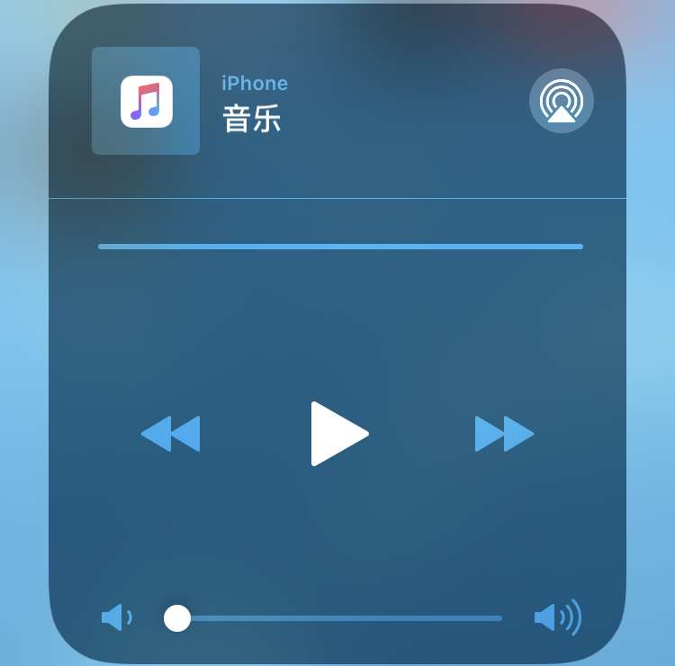
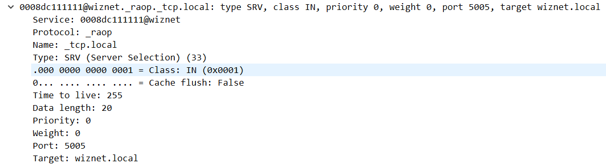
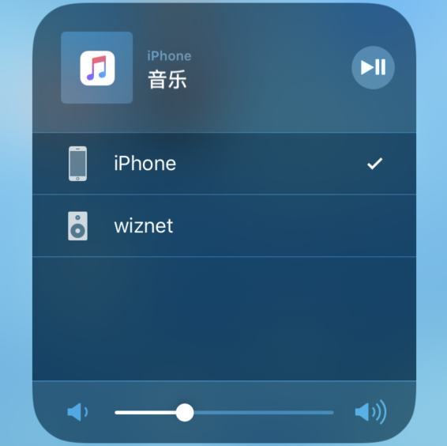
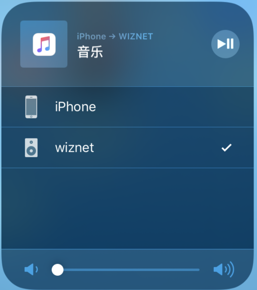
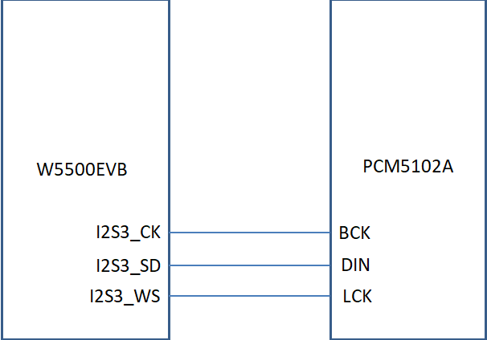

AirPlay是苹果公司推出的一套无线音乐解决方案,我们手里的iPhone、iPad甚至是Apple Watch等设备还有电脑上的iTunes都支持AirPlay,但是支持AirPlay功能的音响设备都是比较贵的，荷包扁扁的我自然是感觉买那么贵的音响实在是不合算。前两天突发奇想，如果STM32可以支持AirPlay的功能，那么不就可以让我享受一把无线音乐的自由自在了吗？于是马上登陆github搜了一下，发现还真有解决方案不过基本上所有的方案都是在linux或者windows上运行的，精挑细选之后选择了https://github.com/juhovh/shairplay这个AirPlay开源项目，主要是该代码是用C语言实现移植到stm32比较方便。
在开始之前我们有必要先了解一下AirPlay, AirPlay是苹果公司收购airtunes后升级airtunes的协议库，在airtunes增加了视频,照片的传输,完整的变为airplay非开源功能，实现随时随地的家庭音乐无线流媒体传输。AirPlay可以将iPhone 、iPad、iPod touch 等iOS 设备上的包括图片、音频、视频及镜像传输到支持AirPlay的设备中播放，AirPlay的实现过程中包含多个协议,其中有的协议是完全标准的, 有一部分协议进行了一些修改,有的则是完全私有的。
• Multicast DNS用于发布服务, 启动后, 在iOS的控制中心菜单中就能看到对应的设备；
• HTTP / RTSP / RTP 用于流媒体服务, 传输音视频数据, 进行播放控制等；
• NTP 时间同步；
• FairPlay DRM加密 完全私有的加密协议。
我们需要准备一部iphone手机并安装网易云音乐，W5500EVB开发板(stm32f103+W5500)，PCM5102A音频模块。iPhone手机用来作为客户端搜索设备及发送音频数据，W5500EVB是WIZnet的开发板具有以太网功能用来作为服务器接收音频数据，开发板的操作可以参考www.w5500.com中的例程。PCM5102A音频模块是将解码后的音频数据进行播放。经过分析后我们要实现Airplay音频播放主要是实现以下三个方面：
1、 iPhone在网络中发现 W5500设备并建立连接
2、 W5500EVB接收并解码音频数据
3、 W5500EVB通过I2S接口将音频传送到PCM5102A音频模块
Airplay发现设备是基于mdns协议实现，iPhone与W5500EVB需要连入同一网络且W5500EVB要加入组播组224.0.0.251才可以接收mdns报文。W5500EVB收到iphone发出的querry查询报文后回复response报文，报文的内容可以参考文档《Unofficial AirPlay Protocol Specification》(http://nto.github.io/AirPlay.html)，下方为MDNS设备发现代码：
1uint8 dns_query(uint8 s, uint8 * name,uint8* rname)
2 {
3 uint8 ip[4];
4 uint16 len, port;
5 switch (getSn_SR(s)) {
6 case SOCK_UDP:
7 if ((len = getSn_RX_RSR(s)) > 0) {
8 if (len > MAX_DNS_BUF_SIZE) {
9 len = MAX_DNS_BUF_SIZE;
10 }
11 len = recvfrom(s, BUFPUB, len, ip, &port);
12 len=dns_makequery(0,name,rname,BUFPUB,MAX_DNS_BUF_SIZE);
13 sendto(s, BUFPUB, len, DIP,DPORT);
14 len=dns_makeresponse(0,name,rname,BUFPUB,MAX_DNS_BUF_SIZE);
15 sendto(s, BUFPUB, len, DIP,DPORT);
16 }
17 break;
18 case SOCK_CLOSED:
19 setDIPR(s,DIP);/* 设置目标IP 224.0.0.251*/
20 setDHAR(s,DHAR);/*设置目标MAC 01:00:5e:00:00:FB*/
21 setDPORT(s,DPORT);/*设置目标端口5353*/
22 socket(s,Sn_MR_UDP, 5353,Sn_MR_MULTI);/*打开SOCKET加入组播组*/
23 break;
24 }
25 return DNS_RET_PROGRESS;
26 }
代码中12行的dns_makequery()函数用来拼接查询报文，代码14行dns_makeresponse()函数用来拼接响应报文，我们将代码编译下载到W5500EVB中运行，打开iPhone的选项列表点击音乐选项会显示如下图所示的界面，点击右上方标志搜索同一网络下的设备。界面如下图所示：

图1-1 iphone选项列表
此时iPhone向224.0.0.251组播组发送querry查询报文，W5500EVB收到查询报文后向224.0.0.251组播组发送response响应报文。W5500EVB发送的response响应报文中该报文中包含RAOP服务，该服务用于音频流的投影。 RAOP从本质上来说是实时流协议，只不过增加了身份验证请求-应答的步骤，RAOP服务用两个信道实现流媒体：一个是用实时流协议的控制信道；另一个是数据信道用来发送数据。RAOP服务名称格式：MAC地址@设备名._raop._tcp.local。通过抓包工具抓取响应报文我们可以看到RAOP服务的相关信息。

图1-2 RAOP服务报文
Service字段是服务名称。Protocol服务的类别：_airplay是视频服务(未用到)，_raop是音频服务。Name说明数据传输的协议，可以通过TCP或者UDP传输。Port声明了RTSP命令交互的端口号为5005，客户端可以通过端口号与服务端建立连接。下图中wiznet就是iPhone发现的支持AirPlay的设备(W5500EVB)。

图1-3 iPhone发现设备
iPhone成功发现W500 EVB设备后就需要连接设备，此时我们点击列表中显示的设备，连接成功后对应设备的后面会显示对勾，如下图所示：

图1-4 iphone连接设备
上文介绍的iPhone发现设备设备的过程中指定了RTSP是通过TCP进行通信且端口号为5005，所以我们要创建一个端口号为5005的TCP服务器来接收数据包，对RTSP数据包的解析是通过rtsp_parase_request()函数进行的如下方代码20行所示。
1 void do_tcp_server(SOCKET s,uint16 localport)
2 {
3 uint16 len;
4 uint8 send_buffer[1024];
5 switch (getSn_SR(s)) {
6 case SOCK_INIT:
7 listen(s);
8 break;
9 case SOCK_ESTABLISHED:
10 if (getSn_IR(s) & Sn_IR_CON) {
11 setSn_IR(s, Sn_IR_CON);
12 }
13 len=getSn_RX_RSR(s);
14 if (len>0) {
15 memset(buffer,0,sizeof(buffer));
16 querry_flag=1;
17 recv(s,buffer,len);
18 memset(send_buffer,0,sizeof(send_buffer));
19 /*解析RTSP数据包并拼接响应数据*/
20 rtsp_parase_request((char*)buffer,(char*)send_buffer,s,len);
21 /*发送响应数据包*/
22 if (0==send(s,send_buffer,strlen(send_buffer))) {
23 send(s,send_buffer,strlen(send_buffer));
24 }
25 }
26
27 break;
28 case SOCK_CLOSE_WAIT:
29 disconnect(s);
30 querry_flag=0;
31 break;
32 case SOCK_CLOSED:
33 querry_flag=0;
34 socket(s,Sn_MR_TCP,localport,Sn_MR_ND);
35 break;
36 }
37 }
由于苹果的AirPlay协议为了防止其他未经苹果允许的设备的接入，对传输的数据用非对称性RSA加密算法进行加密，非对称性的意思就是加密和解密用的不是同一份密钥，RSA加密算法的密钥分为公钥和私钥，两者内容不同，用途也不同。公钥用于加密，一般交给客户端使用；私钥用于解密，一般由服务器管理。iPhone中存有公钥用来对iPhone输出的数据流进行加密，接收端设备利用私钥对接收的数据（音频）流进行解密。W5500EVB是作为服务器接收数据所以我们只需要知道私钥就可以解析数据，我们可以直接百度网上已有大神破译出的私钥。RSA加密算法的实现可以参考开源项目https://github.com/juhovh/shairplay工程中的RSA加密解密相关函数。
iPhone会先发送OPTIONS请求来确定W5500EVB支持的方法，W5500EVB回复支持的全部方法包含ANNOUNCE, SETUP, RECORD, PAUSE, FLUSH, TEARDOWN, OPTIONS, GET_PARAMETER, SET_PARAMETER等，方法具体含义可参考RTSP协议相关文档。
iphone OPTIONS 请求报文：
OPTIONS * RTSP/1.0
CSeq: 0
DACP-ID: 4CB06073C86450D8
Active-Remote: 2937221397
User-Agent: AirPlay/373.9.1
图1-5 OPTIONS请求报文
W5500EVB响应报文：
RTSP/1.0 200 OK
CSeq: 0
Apple-Jack-Status: connected; type=analog
Public:ANNOUNCE,SETUP,RECORD,PAUSE, FLUSH, TEARDOWN, OPTIONS, GET_PARAMETER,SET_PARAMETER
图1-6 OPTIONS响应报文
iphone收到W5500EVB的响应后，会向W5500EVB发送包含Apple-Challenge的OPTIONS数据包，Apple-Challenge后的参数是随机生成且经过了RSA算法加密，W550EVB要将Apple-Challenge中的参数先进行base64解码，解码后的数据尾部添加W5500EVB的IP地址和MAC地址然后通过RSA私钥加密后用base64编码，W5500EVB将加密处理后的数据作为Apple-Response的参数发送给iPhone，iPhone该数据进行验证，数据正确则进行下一步，数据不正确则断开连接。下图为包含Apple-Challenge的OPTIONS 数据包：
OPTIONS * RTSP/1.0
Apple-Challenge: UJPWMzMloBFr98cQQHX3OQ==
CSeq: 2
DACP-ID: 4CB06073C86450D8
Active-Remote: 2937221397
User-Agent: AirPlay/373.9.1
图1-7 Apple-Challenge报文
接收到OPTIONS数据包后，截取Apple-Challenge相关数据，并进行解密代码如下：
1if(strstr(rcv_buffer,"Apple-Challenge:")!=NULL)
2 {
3 rsakey_t *rsakey;
4 rsakey = rsakey_init_pem(pemstr);
5 if (!rsakey) {
6 printf("Initializing RSA failed\n");
7 return;
8 }
9 memset(response,0x00,1024);
10 /*获取Apple-Challenge参数*/
11 mid(rcv_buffer,"Apple-Challenge: ","\r\n",CHALLENGE);
12 /*获取加密Apple-Response*/
13 rsakey_sign(rsakey, response, sizeof(response), CHALLENGE,ipaddr, sizeof(ipaddr), hwaddr, sizeof(hwaddr));
14 mid(rcv_buffer,"CSeq: ","\r\n",CHALLENGE);
15 sprintf(send_buffer,"RTSP/1.0 200 OK\r\nCSeq: %s\r\nApple-Jack-Status:connected; type=analog\r\nApple-Response: %s\r\nPublic: ANNOUNCE, SETUP,RECORD,PAUSE, FLUSH, TEARDOWN, OPTIONS,SET_PARAMETER\r\n\r\n",CHALLENGE,response);
16 }
通过11行处的mid()函数来获取Apple-Challenge后的参数然后14行处的rsakey_sign()函数对获取数据进行加密解密，15行处完成对RTSP响应报文的拼接。拼接报文如下图所示：
RTSP/1.0 200 OK
CSeq: 2
Apple-Jack-Status: connected; type=analog
Apple-Response:Dw5Jrbs1mhjks3YErCo1tSOUV8/G8pOOShS3dUocjWzDGQR6DfqiSEovks+G4nHmCw9BccjlpVHzzRUINYZenWhUy8zlGsVGNwuO4okfi86PjGp5VAS6RPeYbW/CpAPgrzpDsVCblSGt8kQbn+sWuku9WMfa4gYU82DgfmL3laphZlidEIZd8D6FwzAth4pbRdtL3N8GuM2kWGRSpT6FL4VGk326a58g0kUNqNDxHp0fTa4ijk8VORzkyKO9ByFeysmZqGDBurLuSvDoAs0c1zR9aHAIXfJkWd0Ii3WviC2F0+vEODcRgOh7gOvy/i5+OOTiUfvHiDFIqlhVCRnZ2g
Public:ANNOUNCE,SETUP,RECORD,PAUSE,FLUSH,TEARDOWN,OPTIONS,SET_PARAMETER
图1-8 Apple-Response报文
iPhone收到W5500EVB的response后，对Apple-Response后的内容后进行解析校验，校验结果正确则设备连接成功可以继续发送数据否则断开连接。
iPhone与W5500EVB建立连接成功后，就开始通过UDP协议发送音频数据但是iPhone通过airplay传输的音数据都是加密过的，对于接收端来说，需要正确解密后才能对音视频数据进行处理。音频数据采用AES CBC128算法进行加密,该算法解密时需输入参数rsaaeskey、aeskiv，这两个参数通过解析iPhone发送ANNOUNCE请求来获取， ANNOUNCE在传输的时候遵循了SDP协议。SDP协议用来描述媒体信息，下图是ANNOUNCE请求报文
ANNOUNCE rtsp://192.168.1.150/1561243076001349804 RTSP/1.0
Content-Length: 652
Content-Type: application/sdp
CSeq: 3
DACP-ID: 4CB06073C86450D8
Active-Remote: 2937221397
User-Agent: AirPlay/373.9.1
v=0
o=AirTunes 1561243076001349804 0 IN IP4 192.168.1.100
s=AirTunes
i=Wenlong... iPhone
c=IN IP4 192.168.1.100
t=0 0
m=audio 0 RTP/AVP 96
a=rtpmap:96 AppleLossless
a=fmtp:96 352 0 16 40 10 14 2 255 0 0 44100
a=rsaaeskey:bx0eKFGbphzETu16PLtXyP8s2CDKHpjIclJCmChdw6b12YSEvzDR3jlQwTWQdRRRrr99cek6JzdE0pgv0TzAF++FK8g63la8H9ioEcLFq84zWT/7atIlPNFC7RELlQG5ff/yTXHJ7LkzxQF12DvzQzIPd8GMx5ik/rxnLObZ+GQAbB2xtW/By2JT5gapEMBsx8+t+0sZXNwA3GXrjcjF+h6+oAD37A3U04rR/iK+Pvzglvy/13ZOrXL1VJpTkE1O+TIflAzfl0BkBbtfd3lX/+Te+Og8+gXXe516Dg4/v1Veddj4HQYZ/vrxE/qYFGDZIFZUdmpBtmtVMqAYwt1n5w==
a=aesiv:UohAefAQLdnT4BIBimuhfg==
a=min-latency:11025
a=max-latency:88200
图2-1 ANNOUNCE报文
W5500EVB解析收到ANNOUNCE请求包获取rsaaeskey,aesiv并解码。
1 void raop_announce(char *recv_buffer)
2 {
3 mid(recv_buffer,"Active-Remote: ","\r\n",remotestr);
4 mid(recv_buffer,"rtpmap:","\r\n",rtpmapstr );
5 mid(recv_buffer,"fmtp:","\r\n",fmtpstr);
6 mid(recv_buffer,"rsaaeskey:","\r\n",rsaaeskeystr);
7 mid(recv_buffer,"aesiv:","\r\n",aesivstr);
8 /*解码aeskey*/
9 rsakey_decrypt(rsakey, aeskey, sizeof(aeskey), rsaaeskeystr);
10 /*解码aesiv*/
11 rsakey_decode(rsakey, aesiv, sizeof(aesiv), aesivstr);
12 /*init alac*/
13 raop_buffer_init(&alac,fmtpstr);
14 return;
15 }
iPhone会继续向W5500EVB发送SETUP数据包,数据包中包含timing_port 与control_port。timing_port 用来传输 AirPlay 的时间同步包，同时也可以主动向iPhone请求当前的时间戳来校准流的时间戳。control_port是用来发送 resendTransmit Request 的端口，也就是当接收端发现收到的音乐流数据包中有丢失帧的时候，可以通过 control port 发送 resendTransmit 的 request 给iPhone，iPhone收到后会将帧在 response 中补发回来。
SETUP rtsp://192.168.1.150/1561243076001349804 RTSP/1.0
Transport: RTP/AVP/UDP;unicast;mode=record;timing_port=55703;control_port=56616
CSeq: 4
DACP-ID: 4CB06073C86450D8
Active-Remote: 2937221397
User-Agent: AirPlay/373.9.1
图2-2 SETUP报文
W5500EVB回复的响应报文中的server_port, server port 用来传输音频流数据包
RTSP/1.0 200 OK
CSeq: 4
Apple-Jack-Status: connected; type=analog
Transport: RTP/AVP/UDP;unicast;mode=record;timing_port=56461;events;control_port=51196;server_port=55641
Session:DEADBEEF
图2-3 SETUP响应报文
SETUP数据包确定音频流传输方式与传输端口号后，iPhone就开始发送音频数据到W5500EVB指定的server_port 55641端口，W5500EVB接收音频数据，通过解密过程后，我们会得到AAC编码的音频数据，播放器播放AAC数据还需要对其进行解码，话不多说，直接通过部分代码来说明音频解密过程。
1 int decode_audio_data(unsigned char *data, unsigned short
2 datalen, int use_seqnum)
3 {
4 unsigned short seqnum;
5 raop_buffer_entry_t entry;
6 int encryptedlen;
7 AES_CTX aes_ctx;
8 int outputlen;
9 /* Check packet data length is valid */
10 if (datalen < 12 || datalen > 1472) {
11 return -1;
12 }
13 /* Get correct seqnum for the packet */
14 if (use_seqnum) {
15 seqnum = (data[2] << 8) | data[3];
16 }
17 /* Update the raop_buffer entry header */
18 entry.flags = data[0];
19 entry.type = data[1];
20 entry.seqnum = seqnum;
21 entry.timestamp = (data[4] << 24) | (data[5] << 16) |
22 (data[6] << 8) | data[7];
23 entry.ssrc = (data[8] << 24) | (data[9] << 16) |
24 (data[10] << 8) | data[11];
25 entry.available = 1;
26 /* Decrypt audio data */
27 encryptedlen = (datalen-12)/16*16;
28 AES_set_key(&aes_ctx, aeskey, aesiv, AES_MODE_128);
29 AES_convert_key(&aes_ctx);
30 memset(packetbuf,0,sizeof(data));
31 AES_cbc_decrypt(&aes_ctx, &data[12], (uint8*)packetbuf,
32 encryptedlen);
33 memcpy(packetbuf+encryptedlen, &data[12+encryptedlen],
34 datalen-12-encryptedlen);
35 /* Decode ALAC audio data */
36 outputlen = audio_buffer_size;
37 alac_decode_frame(&alac, (uint8*)packetbuf ,audiobuf,
38 &outputlen);
39 entry.audio_buffer_len = outputlen;
40 return outputlen;
41 }
在程序中W5500EVB通过UDP端口每收到数据包先会判断数据包的长度是否小于12因为RTP的包头为12个字节，小于12字节就会直接丢弃掉，大于12字节且小于1472(UDP包的最大长度)就会通过31行AES_cbc_decrypt（）函数的对数据解密然后把解密后的数据通过alac_decode_frame()函数转换为PCM5102A模块可播放的数据并将数据存储在audiobuf中等待发送给音频模块，返回可播放数据长度outputlen，该值在我们初始化I2S的DMA功能时会用到。
音频播放采用的是PCM5102A的DAC模块，该模块是通过I2S接口进行通信，直接将解码后的数据发送到PCM5102A模块即可。为了能与PCM512A模块正常通信要初始化W5500EVB的IIS接口，项目中中使用到的是I2S3接口，需要注意的是I2S3接口的时钟脚PB3，该引脚默认为JTAG的JTDO脚，初始化时需要禁止JTAG以使PB3能够作为I2S的时钟脚，初始化代码如下所示：
1 void I2S_Config(void)2 {
3 I2S_InitTypeDef I2S_InitStructure;
4 GPIO_InitTypeDef GPIO_InitStruct;
5
6 /*Init GPIO */
7 RCC_APB1PeriphClockCmd(RCC_APB1Periph_SPI3, ENABLE);
8 //SPI
9 RCC_APB2PeriphClockCmd(
10 RCC_APB2Periph_GPIOA|RCC_APB2Periph_GPIOB|RCC_APB2Periph_
11 GPIOC|RCC_APB2Periph_AFIO, ENABLE);
12 GPIO_PinRemapConfig(GPIO_Remap_SWJ_Disable,ENABLE);
13 /*GPIO_Pin7 --> I2S_MCK*/
14 GPIO_InitStruct.GPIO_Pin = GPIO_Pin_7;
15 GPIO_InitStruct.GPIO_Mode = GPIO_Mode_AF_PP;
16 GPIO_InitStruct.GPIO_Speed = GPIO_Speed_50MHz;
17 GPIO_Init(GPIOC, &GPIO_InitStruct);
18 /*GPIO_Pin_15 -->I2S3_WS*/
19 GPIO_InitStruct.GPIO_Pin = GPIO_Pin_15;
20 GPIO_InitStruct.GPIO_Mode = GPIO_Mode_AF_PP;
21 GPIO_InitStruct.GPIO_Speed = GPIO_Speed_50MHz;
22 GPIO_Init(GPIOA, &GPIO_InitStruct);
23 /*GPIO_Pin_3 -->I2S3_CK
24 GPIO_Pin_5 -->I2S3_SD
25 */
26 GPIO_InitStruct.GPIO_Pin = GPIO_Pin_3|GPIO_Pin_5;
27 GPIO_InitStruct.GPIO_Mode = GPIO_Mode_AF_PP;
28 GPIO_InitStruct.GPIO_Speed = GPIO_Speed_50MHz;
29 GPIO_Init(GPIOB, &GPIO_InitStruct);
30 /*Init IIS*/
31 SPI_I2S_DeInit(SPI3);
32 I2S_InitStructure.I2S_Mode = I2S_Mode_MasterTx;
33 I2S_InitStructure.I2S_Standard = I2S_Standard_Phillips;
34 I2S_InitStructure.I2S_DataFormat = I2S_DataFormat_16b;
35 I2S_InitStructure.I2S_MCLKOutput=I2S_MCLKOutput_Disable;
36 I2S_InitStructure.I2S_AudioFreq = I2S_AudioFreq_44k;
37 /*I2S clock steady state is low level */
38 I2S_InitStructure.I2S_CPOL = I2S_CPOL_Low;
39 I2S_Init(SPI3, &I2S_InitStructure);
40 I2S_Cmd(SPI3, ENABLE);
41 }
代码12行处通过调用GPIO_PinRemapConfig()函数禁用JTAG, 32行处模式配置为主设备发送I2S_Mode_MasterTx，通信标准设置为I2S Philips标准I2S_Standard_Phillips，数据格式为标准16位格式I2S_DataFormat_16b，采样频率设置为44kHz I2S_AudioFreq_44k, I2S时钟线空闲状态的为低电平。
为了提高数据的传输速度与效率，要打开IIS的DMA发送功能，每次发送SPI_I2S_DMAReq_Tx 请求后会将指定的buf0内的数据发送到SPI3的DR数据寄存器。我该函数是buf0即为存储音频数据的audiobuf, 因为我们的数据是按照16bit传送audiobuf内的数据为uint8型所以 num值为audiobuf内的有效数据长度/2。
1 void I2S2_TX_DMA_Init(u8* buf0,u16 num)
2 {
3 NVIC_InitTypeDef NVIC_InitStructure;
4 DMA_InitTypeDef DMA_InitStructure;
5 RCC_AHBPeriphClockCmd(RCC_AHBPeriph_DMA2, ENABLE);
6 DMA_InitStructure.DMA_PeripheralBaseAddr = (u32)(&SPI3->DR);
7 DMA_InitStructure.DMA_MemoryBaseAddr = (u32)buf0;
8 DMA_InitStructure.DMA_DIR = DMA_DIR_PeripheralDST;
9 DMA_InitStructure.DMA_BufferSize = num;
10 DMA_InitStructure.DMA_PeripheralInc = DMA_PeripheralInc_Disable;
11 DMA_InitStructure.DMA_MemoryInc = DMA_MemoryInc_Enable;
12 DMA_InitStructure.DMA_PeripheralDataSize=DMA_PeripheralDataSize_HalfWord;
13 DMA_InitStructure.DMA_MemoryDataSize = DMA_MemoryDataSize_HalfWord;
14 DMA_InitStructure.DMA_Mode = DMA_Mode_Circular ;
15 DMA_InitStructure.DMA_Priority = DMA_Priority_High;
16 DMA_InitStructure.DMA_M2M = DMA_M2M_Disable;
17 DMA_Init(DMA2_Channel2, &DMA_InitStructure);
18 DMA_Cmd(DMA2_Channel2, ENABLE);
19 SPI_I2S_DMACmd(SPI3,SPI_I2S_DMAReq_Tx,ENABLE);
20 }
音频流的处理过程为通过UDP接收音频数据包，然后对收到的数据包进行解码，并将解码后的数据存储到audiobuf,通过I2S3的DMA功能将数据发送到PCM5102A模块，代码如下所示：
1 void do_raop(uint8 s)
2 {
3 int outputlen;
4 uint8 ip[4];
5 uint16 len, port;
6 switch (getSn_SR(s)) {
7 case SOCK_UDP:
8 if ((len = getSn_RX_RSR(s)) > 0) {
9 /*接收音频数据*/
10 recvfrom(s,buffer,len,ip,&port);
11 /*解码收到的音频数据*/
12 outputlen=decode_audio_data(buffer, len ,1);
13 /*配置DMA*/
14 I2S2_TX_DMA_Init((uint8*)audiobuf,outputlen/2);
15 }
16 break;
17 case SOCK_CLOSED:
18 socket(s, Sn_MR_UDP,55641,0);
19 break;
20 }
21 }
代码完成后就要进行硬件连接，由于W5500EVB的SPI2口用来与W5500进行通信所以我们只能选择I2S3接口，I2S，W5500EVB与PCM5102A模块连接示意图如下所示：

图3-1硬件连接图
将编译好的程序下载到W5500EVB,将耳机插入PCM5102A模块，用iPhone手机搜索并连接W5500EVB设备，点击播放音乐就可以用耳机听音乐了。
本文的项目中只是简单的实现了通过AirPlay播放音乐，由于时间匆忙项目功能还可以继续优化例如对各个音乐播放器的兼容性问题，QQ音乐、网易音乐等实现都不太一样本文项目中用的是网易云音乐；音乐播放过程中的音量设置问题，；音乐播放过程中的噪音问题,由于手上只有带STM32F103 的W5500EVB开发板，f103芯片在运行加密解密时会比较慢RAM空间也比较小等。大家如果想要做的话建议选用处理速度快一些的芯片。